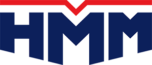

home > ESG 경영 > 윤리경영
윤리경영
윤리경영은 기업의 가치관을 형성하고 일관되게 실행하여
지속성을 가능하게 하는 튼튼한 자원입니다.
HMM은 지속가능경영을 실현하는 초우량 기업으로의 발전을 위해 윤리경영을 핵심 경영이념으로 삼아,
모든 이해관계자에게 신뢰받는 기업, 사회적 책임을 다하고 국가와 인류 발전에 공헌하는 기업이 되고자 합니다
- 
HMM 윤리경영 - 주주/고객 신뢰경영
- 국가/사회 책임경영
- 협력회사/경쟁사 투명경영
- 임직원 윤리경영
윤리경영은 사회적 책임을 다하여 지속 발전하기 위한 기업 경쟁력의 원천 입니다.
-
- 기업이 사회적으로 정당한 역할을하여 시장으로부터
지속적인 신뢰를 얻는데 기여할 수 있습니다. - 경영 투명성을 바탕으로 시장으로부터 지속적 신뢰를 얻고 있는 기업은 우량 기업으로 발돋움 하는 반면 그렇지 못한 기업은 글로벌 시장으로부터 배척되는 것을 우리는 국내외 사례를 통해 알 수 있습니다. 이에 따라 국제 사회는 윤리준수를 강화하는 정책을 수립하고 이를 점점 강화해 나가고 있습니다. 따라서 기업은 효율적인 윤리경영 준수 시스템을 갖출 수 밖에 없으며, 윤리적 가치로 무장된 모습을 갖추어야만 오늘날 경영환경에서 살아남을 수 있게 되었습니다. HMM은 사회적 책임을 다하여 지속 발전할 수 있도록 노력하겠습니다.
- 기업이 사회적으로 정당한 역할을하여 시장으로부터
-
- 윤리경영은 기업의 경영성과에도 영향을 미칩니다
- 구성원의 정당한 대우가 보장되는 등 높은 수준의 윤리성이 유지되는 기업에서는 구성원도 자부심과 보람을 느끼고 열심히 일하려는 의욕이 생겨나 생산성이 크게 향상되는 효과를 가져 올 수 있습니다. 실제 여러 연구의 결과를 보더라도 윤리경영을 잘하는 기업의 경영성과가 상대적으로 좋은 것으로 나타났습니다. 이러한 현상은 해외의 경우도 마찬가지입니다. HMM은 윤리경영이 기업의 구조와 경영활동을 건강하고 튼튼하게 하는 경영이념이며 공유가치라는 신념을 가지고 있습니다.
-
- 기업의 국제 경쟁력을 평가하는 글로벌 스탠더드로
윤리경영이 부상하고 있습니다. - 세계적으로 엔론사태 이후 기업의 준법정신을 높일 수 있는 “기업윤리”가 강조되고 있으며, 국내적으로는 외환위기 이후 기업윤리성에 대한 인식이 강화되었습니다. 또한 미국 기관 투자가들은 최근 한국을 비롯한 동아시아 국가들에 보다 강도 높은 윤리경영을 요구하고 있으며, 회계가 투명하지 않거나 지배구조 개선이 부진한 기업에 대해서는 투자 비중을 축소하고 있는 추세입니다. 앞으로 기업윤리를 무시하거나, 국제적 수준에 도달하지 못하는 기업은 세계 시장에서 투자자나 소비자 단체들로부터 외면 받게 될 가능성이 높습니다. HMM은 윤리경영이 하나의 경영수단이 아니라 기업 경쟁력의 원천으로서 그 중요성을 인식하고 있습니다.
- 기업의 국제 경쟁력을 평가하는 글로벌 스탠더드로